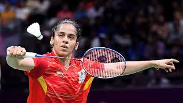
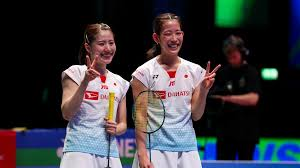
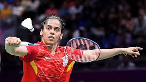
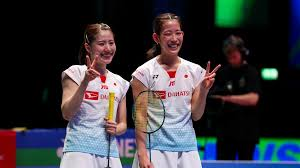
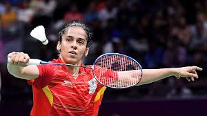
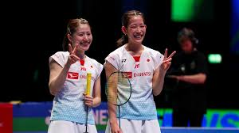
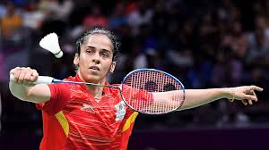
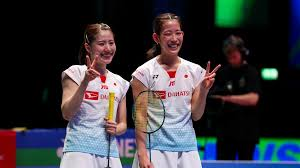

Badminton adalah suatu olahraga raket yang menggunakan raket untuk memukul kok melewati jaring. Meskipun dapat dimainkan dengan tim yang lebih besar, bentuk permainan yang paling umum adalah "tunggal" (dengan satu pemain di setiap sisi) dan "ganda" (dengan dua pemain di setiap sisi) yang saling berlawanan.